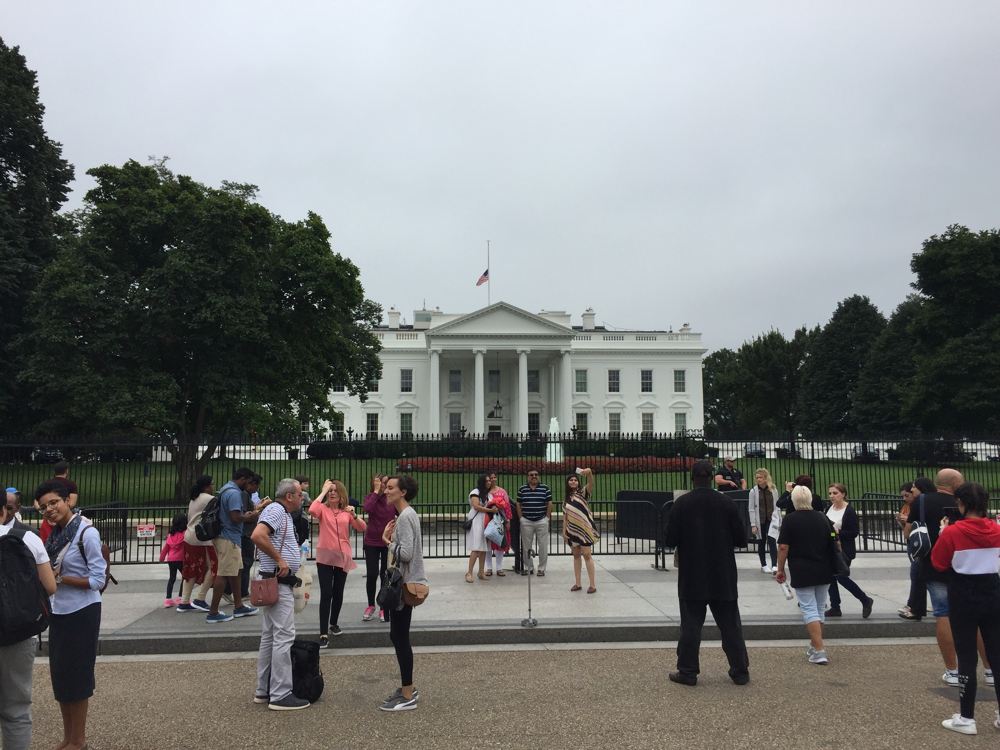

Washington DC
Falls Churchben laktam, ami Washington DC külvárosában található, bár papíron Virginiához tartozik. Egy tipikus amerikai kertvárosi rész, kellemes, nyugodt környék, távol a város zajától, mégis közel, hogy bármikor fél óra alatt be lehessen menni a városközpontba.
 Washington DC egy elég különleges város. A 19. században épült, és szó szerint „megtervezett város”: az utcák nagyrészt derékszöget vagy 30 fokot zárnak be egymással, sőt még a jelentős épületek is mind geometriai alakzatok csúcsaira épültek. A belváros teljes egészében közigazgatási, banki, szórakoztató ipari és turisztikai központ, lakóépületek ott nem igazán találhatóak. Turistaként remek hely, megannyi látnivalóval, program lehetőséggel, ráadásul a múzeumok jelentős része ingyenesen látogatható. A város közepén található a National Mall, egy 3 km hosszú park, ami tele van híres látnivalókkal. A várost nyugatról a Potomac folyó határolja, aminek a jobb partja már hivatalosan Virginia, de gyakorlatilag nem érződik különbség a két oldalon.
Nagyon élveztem DC-t, rengeteg időt töltöttem bent a városban. Múzeumokba jártam, sétálgattam a parkokban, sporteseményeket néztem. A városnak remek az éjszakai élete, annyi negatívummal, hogy a legtöbb hely bezár hajnali 2-kor. DC északnyugati része Georgetown, ezt a környéket még a 1700-as években alapították, mondhatni ez az óvárosi rész. Az ott található egyetem a jobbak közé tartozik az USA-ban. Szerencsésnek mondhatom magamat, hogy elvégezhettem ott egy kurzust.
Mindenkinek ajánlom, hogy menjen el egyszer Washington DC-be, mert lenyűgöző hely. Érdemes legalább 4 napot rászánni, mert rengeteg a látnivaló. Ha érdekel, nézzétek meg azt a néhány képet, amit összeválogattam a városról!